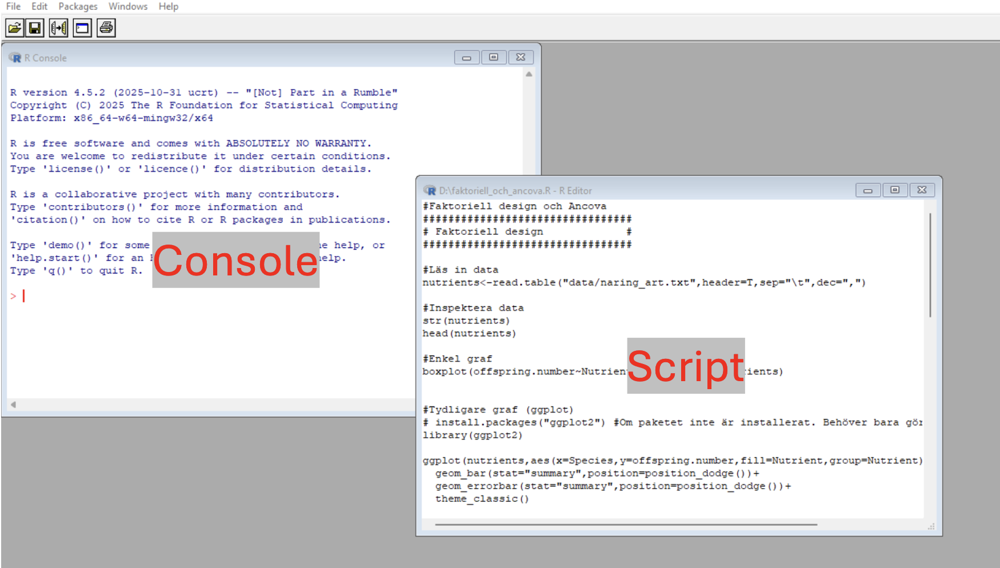
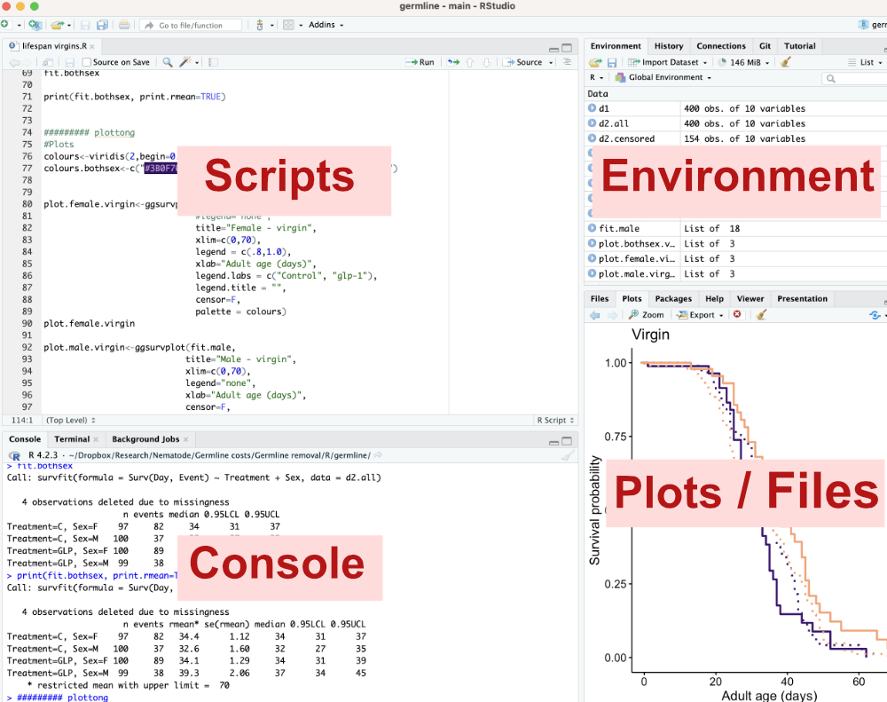
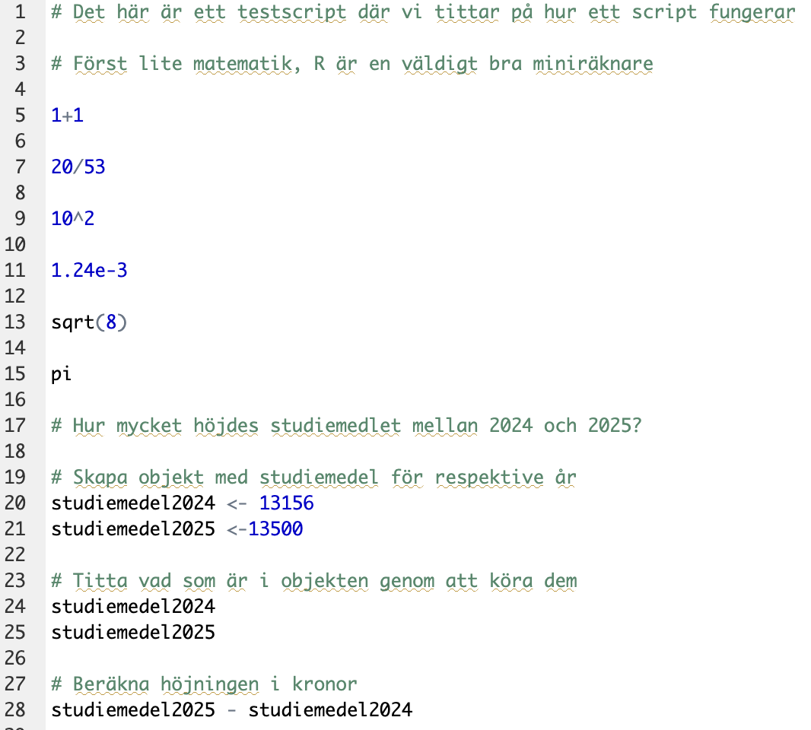

10^2[1] 100We will now open R (or RStudio), get familiar with how to write and run code, and how to use scripts.
The appearance of R differs depending on the operating system; at startup you only see a console, and a new window opens when you open a script file. Figures end up in yet another window.

RStudio is an alternative graphical interface (GUI) to R. Its appearance is the same regardless of operating system, and its interface is divided so that the different panes (script, console, plots, etc.) are always in the same place. The script pane is only visible once you have opened a script file.

We will now start interacting with R, and to begin with we’ll do it interactively, meaning we type commands directly into the console.
Click in the console, so your cursor lands on the bottom line, after the > sign. Type 1+1 and press Enter. When you press Enter, you run the code, i.e. what you typed on the line is read by R, and R carries out your command. In this case you’re asking R to add 1 and 1, and R gives you the answer on the next line, i.e. 2.
R is an excellent calculator, and since you can see your formula, you can easily double-check that you did it correctly. Much better than using your phone’s calculator.
R can also easily handle exponents. Try typing the following:
Taking the square root of a number is no problem:
R also knows mathematical constants, such as pi
R can store information in something called an object. An object can contain different types of information — it can be a number, a series of numbers, a name, a dataset, the result of a statistical analysis, a function, or much more. We often choose to save various results as objects so we can reuse them, but also to make our code clearer.
We will now do an exercise in using objects. The exercise is very simple and could easily be done without going through objects, but it illustrates the way of thinking and the logic of objects well.
Let’s calculate how large a proportion of the EU’s countries you have visited. Think about how many that is. We will then create an object we call visited_countries, and that object should contain a number corresponding to how many countries you have visited.
Let’s look at the formula. visited_countries is the name of our object. It should be filled with content. You want to fill it with the number of EU countries you have visited. So you type <-, which is an arrow pointing at the object. After the arrow you type the number of countries you’ve visited, for example 12. The arrow goes from the number 12 to our object, i.e. you save the number 12 into our object.
If you want to see what an object contains, you type the object’s name and press Enter.
To calculate the proportion of EU countries you’ve visited, we need to make an object we call total_countries, containing the number of countries that are members of the EU
Now we can calculate the proportion of EU countries you’ve visited, by dividing the object visited_countries by total_countries
Maybe you’d rather have it as a percentage? Modify the formula!
You might want to use this result in future calculations and want it saved as an object. Modify the latest formula so that you save the result as an object you call percent_EUcountries_visited
Check what the object percent_EUcountries_visited contains by typing its name and pressing Enter
Do you think R shows an unnecessarily large number of decimals? If you use the function round() you can decide how many decimals R should show. Let’s express the percentage in the object percent_EUcountries_visited with one decimal
A function is an operation built into R. The function has a name (in this case round) and is always followed by parentheses. Inside the parentheses you specify the object R should do something with, as well as any other parameters that need to be given. If you use round() you must specify how many decimals R should round to, digits = 1. Try changing the value to get a different number of decimals!
If you don’t know how a function works, you can always access R’s help files by typing a question mark followed by the function’s name, and pressing Enter. Try it!
?round
Let’s try a few functions to get summary statistics on a set of values, which we save in an object we call counts
Let’s calculate the mean of counts, using the function mean()
What is the standard deviation? We use the function sd()
How many values do we have in our variable counts? Use the function length()
What is the standard error (SE)? The standard error is the standard deviation divided by the square root of the number of measurements. We’ve used all these functions already, so try writing your own code to calculate the standard error. If you get stuck, the code is below.
When we do statistics, we constantly use R’s various functions to read in data, make graphs, run statistical tests, and give us the results of the tests. It is all these built-in statistical functions that make R a leading language for statistical computing, and even more functions are available in the thousands of packages you can install in R.
So far you have interacted with R interactively, meaning we’ve asked R to do something, R has done it, we’ve asked R to do something new, R has done that too, and so on. It’s a bit like a conversation with another person.
The downside of working interactively is the same as the downside of a spoken conversation. For one thing, it’s hard to remember what was said when you think back on it later, and it’s also difficult to do complicated tasks unless you start writing down what you’re doing.
How do we remember our conversation with R — what we’ve done and what we’ve found? We use script files!
A script file is a document with the extension *.R where you document the commands you give to R in a logical order. You can also add comments to your script explaining what you’ve done (this is called annotating the script).
Since R always gives the same answer to your commands (unless you ask R to do something involving random numbers), it’s enough to document the commands you give to R. You can then run your commands again and get the answer again.
You document what you do, and can repeat your analysis in the future
If you’re going to do a new analysis on a new dataset, but with methods you’ve previously used and documented in a script, you can copy your existing script and only change what’s needed for your new data. You don’t have to start from scratch. Your old scripts are therefore a goldmine when you’re about to analyze new data.
You can more easily debug code and develop analyses that happen in several steps
You can easily go back and change some step in an analysis
To sum up: there are no downsides to using script files instead of running R interactively. Only advantages. The only times I use R interactively myself are when I use R as a calculator for everyday problems.
We start by downloading an existing script file: testscript.R (right-click, choose “Save link as”) and save it somewhere suitable on your hard drive. Then choose file -> open document in R, or file -> open file in RStudio. The script file now opens as a new window (in R) or in the upper left part of the program (in RStudio).
Let’s take a look at the script

The first line that doesn’t start with a # is the line that reads: 1+1
That is a line of code. In our script we have documented our question to R: “what is 1+1?” But we don’t yet have an answer from R. We have documented the question, but not yet asked it. We need to run that line in the script for R to give us an answer.
In principle you could select the line, copy the code, and paste it into the console (keep that as a backup solution if you forget how to do it), but it’s much more convenient to do the following:
Select the code you want to run and:
press command + Enter (on Mac)
press ctrl + r (on Windows)
Run the line with the code 1+1 following the instructions above:
Once you’ve run the line, it appears in the console, and on the line below you get the answer from R.
The line of code we ran doesn’t contain any objects, so it can be run independently of other lines. But try running the line: studiemedel2025 - studiemedel2024
Do you get an error message? Error: object 'studiemedel2025' not found
That means you’re asking R to do something with an object, but R doesn’t know what that object is. You documented the creation of the object in your script a few lines above:
You must first run those lines, so that R knows what the objects studiemedel2024 and studiemedel2025 contain. Then you can run the line studiemedel2025 - studiemedel2024 again. It should work then!
Now let’s try writing our own script! We start by creating a script file by clicking through the menus:
R: choose File > New document
RStudio: choose File > New file > R Script
Your task is the following: Create a script that calculates how old a person turns this year (for example, how old you turn this year). Use our script about the student-aid increase above as a source of inspiration, and comment your script well.
Try it yourself, but if you get stuck you can peek at a possible solution below (under Code).
[1] 28Don’t forget to save your script with a suitable name on your hard drive. In R you must type the file extension .R yourself when you save the script the first time, while RStudio adds that extension automatically.
Comments (annotations)
We see that the first line starts with a hashtag (
#).# This is a test script where we look at how a script worksThis means the line is not interpreted as code, but as a comment on your code. A file that only contains code but no comments is fairly incomprehensible, even to yourself when you return to the script a few days later. We use comments to document:
What we’re doing
Why we’re doing it
A well-documented script file (also called a well-annotated script file) is easy to return to in order to repeat the analyses or apply them to new datasets. If you use RStudio, comments are automatically colored differently.